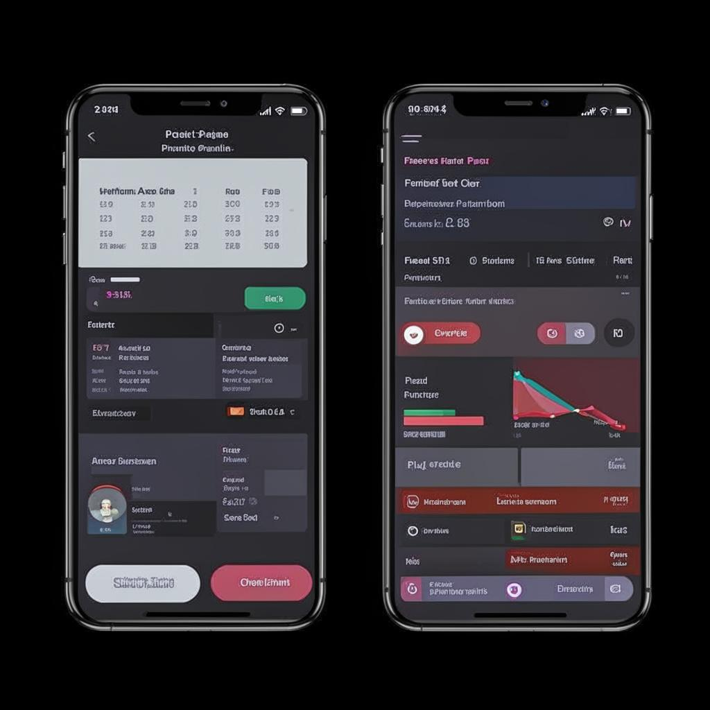

Использование ноутбуков, нетбуков и карманных компьютеров в образовательных целях
Преимущества использования в образовании
- Доступ к информации: Мгновенный доступ к учебным материалам, онлайн-библиотекам и образовательным ресурсам.
- Интерактивное обучение: Возможность использования интерактивных приложений, образовательных игр и симуляций.
- Развитие навыков: Улучшение навыков работы с компьютером, критического мышления и самостоятельного обучения.
- Совместная работа: Удобство для групповых проектов, обмена информацией и совместного редактирования документов.
- Персонализированное обучение: Возможность адаптировать учебный процесс под индивидуальные потребности каждого ученика.
Примеры использования
Онлайн-обучение и вебинары
Участие в онлайн-курсах, вебинарах и дистанционных программах обучения становится более доступным и удобным.

Создание презентаций и проектов
Ученики и студенты могут легко создавать мультимедийные презентации и проекты, используя специализированное программное обеспечение.
Исследовательская работа и сбор данных
Быстрый доступ к научным статьям, базам данных и исследовательским материалам помогает в проведении исследований.
Рекомендации по выбору устройства
При выборе ноутбука, нетбука или карманного компьютера для образовательных целей стоит учитывать следующие факторы:
- Производительность: Достаточная для выполнения учебных задач и запуска необходимых приложений.
- Портативность: Легкий вес и компактные размеры для удобной транспортировки.
- Время работы от батареи: Длительное время работы без подзарядки для использования в течение учебного дня.
- Надежность: Прочная конструкция и устойчивость к повреждениям.
- Цена: Соответствие бюджету и соотношение цены и качества.